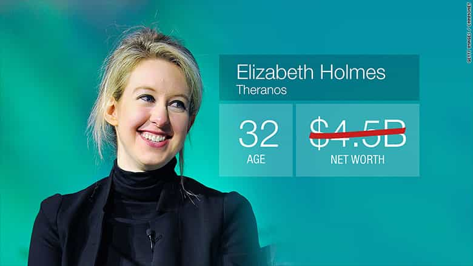

< < < Back
Silicon Valley Darling Elizabeth Holmes Goes From A Net Worth Of $4.5 Billion To Zero – Return Of Kings
The woman touted as “the female Steve Jobs” has had her wealth revised by Forbes from $4.5 billion last year to $0 this month. Elizabeth Holmes, whose name has been associated with all manner of feminist attempts to claim that women are inherently awesome at business, founded the blood-testing company Theranos. Yet Theranos has been involved in scandal after scandal recently, largely based on the company’s obsession with secrecy and claiming without verification that its Edison blood-testing device is “revolutionary.”
On the back of what appears to be sensationalized statements about the Edison device, Theranos has raised hundreds of millions of dollars in investor money. The allegedly illegal manner in which that money was raised has even led recently to the opening of criminal investigations by both the Securities and Exchange Commission (SEC) and the northern California district of the US Attorney’s Office. Others have accused Theranos of consumer fraud. Like with the likely criminal charges, should just one of the pending customer lawsuits succeed, it is hard to see how Holmes could not have been intricately involved in any wrongdoing. The company has already admitted its products fall well below what it itself has said about them–it had to reissue two whole years of blood tests because of rampant inaccuracies.
Even the perennial feminist propaganda mouthpieces are having to report on (some of) the major facts

Forbes‘ frank admission is glaring not just for the rapid decline in Holmes’ theoretical astronomical wealth. The more revealing aspect, rather, is how the publication has gone from trumpeting the mere smell of the Stanford dropout to questioning both her credibility and underlying honesty. An article by Fortune was even more savage. Forbes‘ rival pointed out that Holmes should never have been considered a billionaire in the first place, even though it, too, had made the mistake of referring to her as such.
Additional publications, Inc. among them, have been quietly juxtaposing the seeming downfall of Elizabeth Holmes, which started in earnest last year, with the stories of established business fraudsters. Whilst not overtly disseminating fraud accusations against the founder herself, the implied allegations are obvious.
That these allegations are even circulating so widely in mainstream print is an anomaly. Over recent years, outlets such as Forbes, Fortune and Inc. have regressed into the pumping out of feel-good pop psychology pieces and, frequently enough, contrived SJW propaganda. For example, all three have engaged in ridiculous fawning over Gamergate liars Anita Sarkeesian and Brianna Wu. [1] [2] [3] The disasters enveloping Theranos and the world of Elizabeth Holmes have been sufficient for usually highly biased coverage to shift markedly given the typical leftist media climate.
Problematically, though, most outlets have been extraordinarily reticent to associate Elizabeth Holmes herself with potential criminal conduct, despite the huge control she wields over Theranos and the number of technology patents registered in her name. More so than, say, Facebook’s Mark Zuckerberg, Holmes continues to carve out a reputation as a hands-on manager. And then there’s that fixation on secrecy, which, thanks to media, governmental and Silicon Valley acquiescence, has allowed Theranos and Holmes to operate without proper scrutiny. Compulsive secrecy is bad enough when the company offers a social media platform, but it is particularly unacceptable when the big business in question is in the healthcare industry, on which the lives of millions of people literally depend.
Was there a cover-up?
General James Mattis went from fielding Elizabeth Holmes’ emails, which requested the suppression of concerns about her company’s products, to being on her board of directors.
We live in a very heavily populated world. Despite the overall leftist bent of the media, there are countless newspaper reporters who would be nominally willing to put career advancement ahead of leftwing ideology and publish about the Theranos debacle much earlier and in much greater detail. So why didn’t they? The answer probably lies in the repeated attempts of powerful interests to dial down any negative attention focused on Elizabeth Holmes and her corporate project.
One failure deserves special attention. Months before Holmes’ $0 net worth evaluation, The Washington Post revealed that she had petitioned a now retired US Marines commander, General James Mattis, to quash concerns within the military that Theranos’ market offerings were bonafide duds. One military official was so flabbergasted by a lack of medical and other evidence behind the company’s products that they sought a Food and Drug Administration (FDA) investigation. This desire for greater testing of Theranos’ claims, in a context of soldiers’ lives being at risk, amounted to nothing. Also, Mattis found himself appointed to a Theranos board position some time later. If this does not raise ethics alarm bells for you, I do not know what will.
I am not one for conspiracy theories, but even the simplest kinds of third party due diligence could have exposed the apparent scam of Theranos years ago. Having patents for products in no ways prevents determinations about their efficacy. And in the case of information suppressions like within the US military, any earlier fact-finding missions were promptly jackknifed.
This is what happens when you put “females in business” above actual business success
Oppressed female workers, clearly.
Under the rules of “gender equality,” because we had Steve Jobs, we needed a female Steve Jobs. So media outlets and others came together to create one in Elizabeth Holmes. It did not matter that one could make out how well an iPhone or MacBook worked based on personal use, whereas a blood testing device should be looked at and evaluated intensely by independent experts. What did matter was that Holmes could serve an ideological purpose: women are not as good as men at business, they are even better.
The end result is that many investors have almost certainly been fleeced or at the very least shortchanged, customers have been ripped off, and the lives of the sick and vulnerable, who depend on accurate health tests, have been gravely jeopardized.
Once again, feminism says it helps society when it really undermines and endangers it.
Read More: Why Is Outspoken Feminist Charlize Theron Dating Alleged Woman-Abuser Sean Penn?